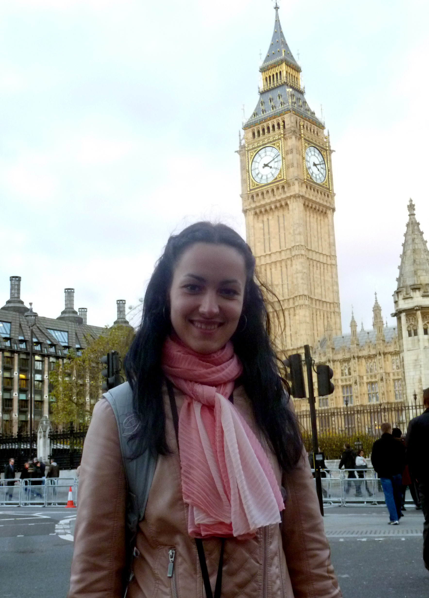

Біг-Бен
Біг-Бен є символом Лондона і Англії. Зараз вежа офіційно називається Вежею Елізавети. Вона була побудована в 1859. Її висота 320 футів. Біг-Бен популярний не тільки в Англії але і у всьому світі.
Біг-Бен був збудований, щоб замінити Старий Вестмінстерський палац, після того, як він був знищений пожежею в жовтні 1834 року.
Щоб подивитися на годинник Біг-Бена зблизька, чи просто відвідати вежу Єлизавети, треба обов'язково мати британське громадянство. Але навіть тоді екскурсія має бути спонсорована членом британського Парламенту.
Біг-Бен "замовк" на чотири роки до 2021 року. До цього часу має завершитись реконструкція Вежі Єлизавети

Спаська вежа
Спаська вежа — головна проїзна башта Московського Кремля. Виходить на Червону площу. Побудована у 1491 році, в 1624 році був зведений готичний верх з курантами.
Спаська вежа була споруджена в 1491 році в період князювання Івана III архітектором П'єтро Антоніо Соларі, про що свідчать білокам'яні плити з пам'ятними написами, встановлені над в'їзною брамою вежі.
Первісне найменування вежі - Фролівська - походить від церкви Фрола і Лавра на Мясницькій вулиці, куди вела дорога з Кремля через ці ворота. Церква не збереглася до наших днів.
На верху вежі в XVI столітті були встановлені знаменитий годинник-куранти, з тих пір він неодноразово змінювався.

Водонапірна вежа
Водонапірна вежа — історична споруда на Європейській площі у місті Вінниця, споруджена 1912 р. Використовувалась як оглядова вежа та каланча. З 1985 року реконструйована та виконує функцію музею. Статус пам'ятки місцевого значення має від 17 лютого 1983 року. Від 2000 року, згідно із рішенням міської ради, вежа внесена до переліку міської символіки.
У 1912 році за проектом Григорія Артинова в центрі міста була зведена водонапірна вежа, що поєднувала функції пожежної каланчі, для цілей якої був пристосований верхній ярус.
Перший водогін у Вінниці, роботу якого забезпечувала башта, мав протяжність 1,3 км та продуктивність 600 м3 на добу. Живлячись водами Південного Бугу, він по залізних трубах через кумбарські насосні станції постачав її, вже відфільтровану та відстояну, через три водорозбірних будки на територію міста.

Годинник ратуші
Найперші відомості про годинник на ратуші Львова датуються 1404 роком. Під час перебудови ратуші і вежі в 1491 році на вежі розмістили годинниковий дзвін вагою 1,1 тони. За допомогою цього дзвону вручну відбивали години аж доки не зробили нового автоматичного годинника.
Оздобленням годинника займався маляр Ян, за що отримав 4 червоних золотих. Про цей годинник згадує в своїх працях Зиморович. При пожежі 1527 року, коли горіло все місто, годинник вцілів, але як і вежа потребував ремонту.
До XVI століття годинниками, як правило, опікувались монахи. Однією з причин було те, щоб не дозволити «нечистій силі» оселитись у складному годинниковому механізмі. Вважалось, що годинник, яким опікується «божа людина», ніколи не введе в оману.